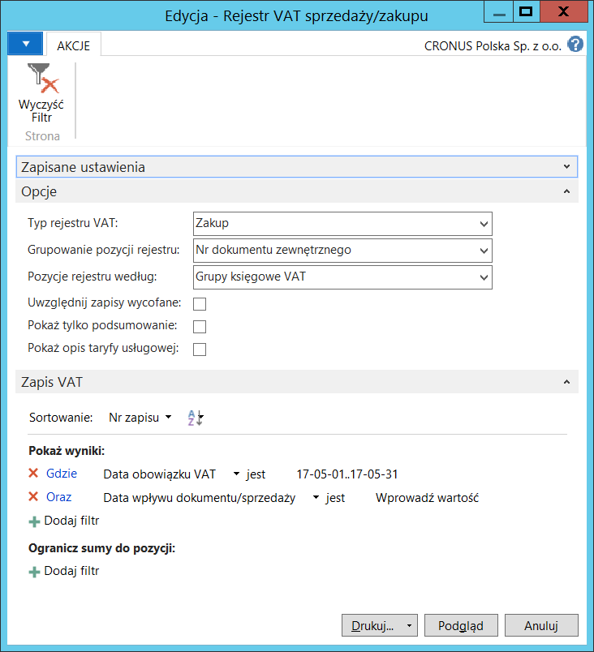
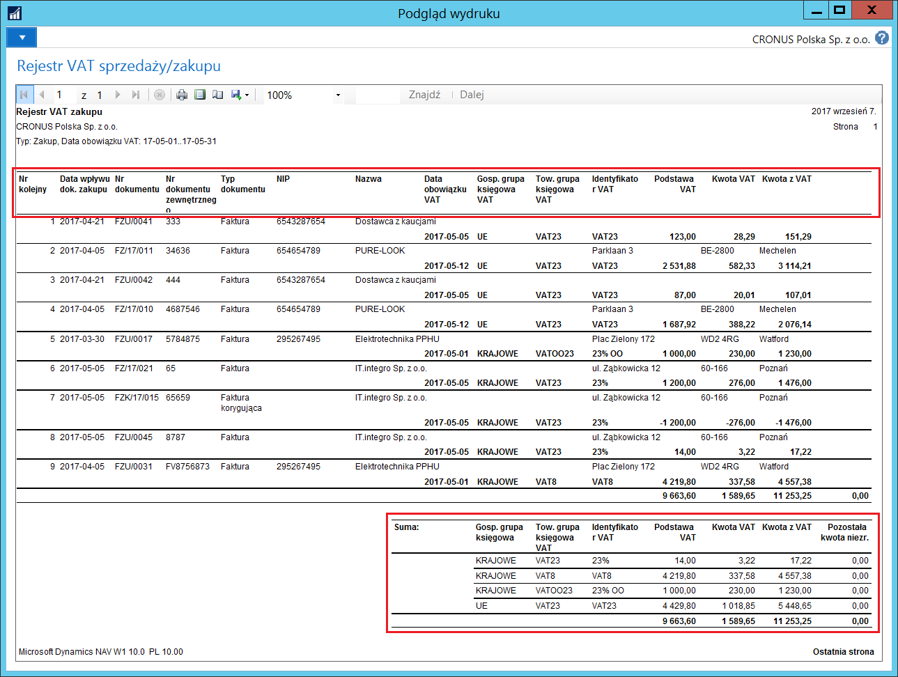

Rejestr VAT sprzedaży/zakupu
Informacje ogólne
Raport Rejestr VAT sprzedaży/zakupu jest podstawowym raportem do kalkulacji kwoty podatku VAT należnego i naliczonego za wybrany okres. Raport pokazuje kwotę podstawy VAT, kwotę VAT i szczegółowe informacje o nabywcy lub dostawcy dla każdego dokumentu oraz kwotę VAT niezrealizowanego.
Kwota podstawy VAT i kwota VAT są podzielone i wyświetlone dla poszczególnych stawek VAT. Wyświetlone są również suma kwoty VAT i zsumowane są kwoty VAT dla każdej kombinacji Gosp. grupy księgowej VAT i Tow. grupy księgowej VAT. Raport Rejestr VAT sprzedaży/zakupu może prezentować Zapisy VAT według grup księgowych VAT lub identyfikatorów VAT, w zależności od opcji wybranej podczas przygotowywania wydruku raportu.
Obsługa
W celu przygotowania i wydrukowania Rejestru VAT sprzedaży/zakupu, należy postępować według następujących kroków:
Należy wybrać Działy > Zarządzanie Finansami > Raporty i analizy > Rejestr VAT sprzedaży/zakupu.
W oknie wstępnym raportu, na karcie skróconej Opcje należy wybrać/wprowadzić właściwe parametry, które zostaną użyte do wybranie właściwych Zapisów VAT i wyświetlenia ich w raporcie:
Typ rejestru VAT – w tym polu należy wybrać typ transakcji spośród dostępnych opcji określając w ten sposób, czy w oknie mają zostać wyświetlone tylko transakcje zakupu lub tylko transakcje sprzedaży, albo oba typy transakcji. Dostępne opcje, to:
Sprzedaż
Zakup
Sprzedaż i zakup
Grupowanie pozycji rejestru – w tym polu należy wybrać sposób przyporządkowywania wielu zapisów VAT do jednego dokumentu prezentowanego w raporcie. Dostępne opcje, to:
Nr dokumentu – wszystkie zapisy VAT z tym samym ciągiem znaków w polu Nr dokumentu zostaną zaprezentowane jako wiersze jednego dokumentu, niezależnie od wypełnienia pola Nr dokumentu zewnętrznego
Nr dokumentu zewnętrznego – wszystkie zapisy VAT z tym samym ciągiem znaków w polu Nr dokumentu zewnętrznego zostaną zaprezentowane jako wiersze jednego dokumentu, niezależnie od wypełnienia pola Nr dokumentu
Pozycje rejestru według – w tym polu należy wybrać opcję do określenia sposobu prezentacji danych. Dostępne opcje, to:
Grupy księgowe VAT
Identyfikator VAT
Uwzględnij zapisy wycofane – zaznaczenie tego pola spowoduje, że w raporcie zostaną wyświetlone również te zapisy VAT, które zostały wycofane: zarówno zapisy pierwotne, jak i wycofujące.
Pokaż tylko podsumowanie – zaznaczenie tego pola powoduje ograniczenie wydruku do jednej strony, na której znajduje się wyłącznie podsumowanie kwot związanych z VAT w wybranym okresie. Raport wyświetlony w ten sposób nie zawiera szczegółowych pozycji rejestru.
Pokaż opis taryfy usługowej – zaznaczenie tego pola spowoduje, że dla pozycji rejestru VAT sprzedaży oznaczonych jako Usługa zostanie wyświetlona nazwa zgodna z przyporządkowanym Nr taryfy usługowej.
W tym samym oknie, na karcie skróconej Zapisy VAT wymagane jest ustawienie filtru okresu dla daty obowiązku VAT, który należy wprowadzić w polu Data obowiązku VAT. Dodatkowo można standardowo ustawić filtry w innych polach w celu ograniczenia zakresu danych objętych raportem:

Należy wybrać Drukuj lub Podgląd.
Wydrukowany (lub wyświetlony w formie podglądu na ekranie) raport przedstawia wymagane, szczegółowe, dane o dokumentach:
Pierwsza strona zawiera nazwy poszczególnych kolumn, a ostatnia strona zawiera podsumowania: ogółem dla rejestru i w podziale na kombinacje grup księgowych VAT:
